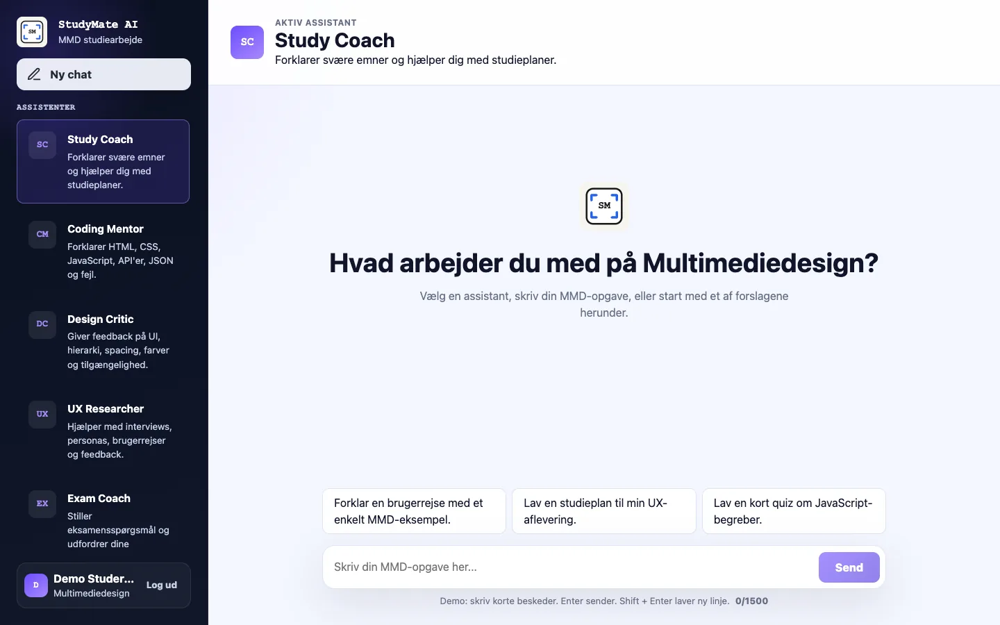
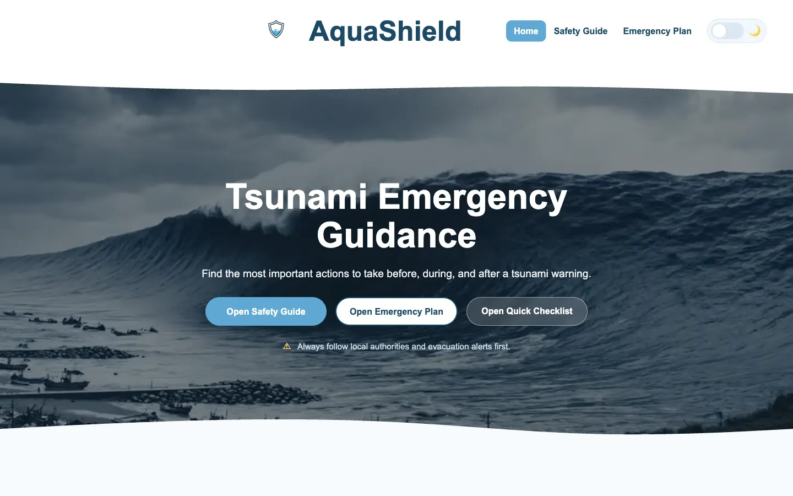
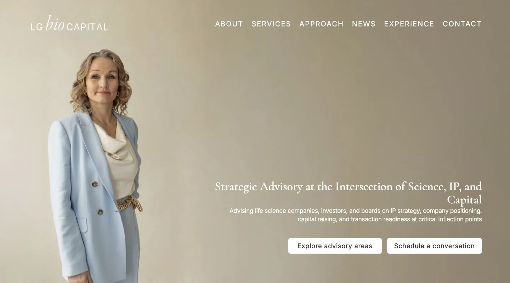
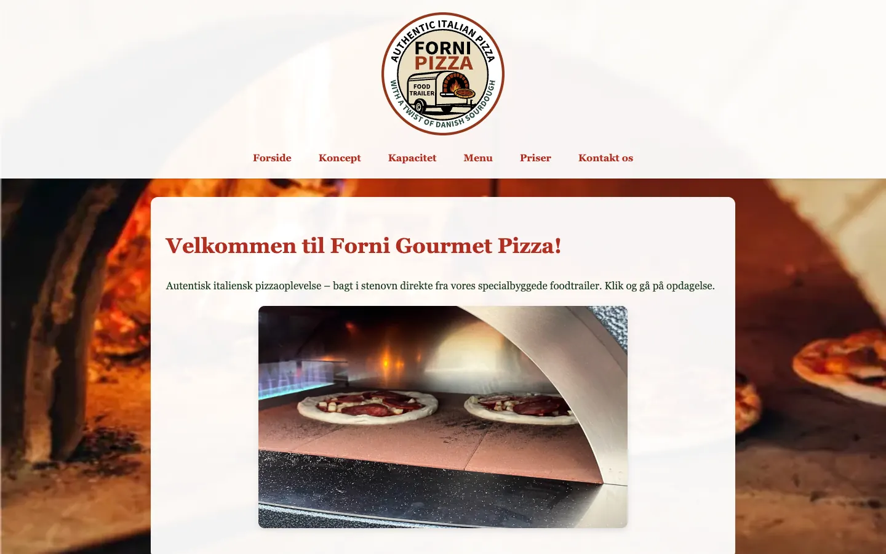

Featured AI Product · Functional Prototype
StudyMate AI
An AI study workspace with specialized assistants, contextual project support and a protected server-side integration.

Hi, I'm
SOFTWARE DEVELOPER • AI BUILDER • UX DESIGNER
I build digital experiences that are intelligent, intuitive and impactful.
Featured work
A focused selection of work combining design, code and practical problem-solving.
Featured AI Product · Functional Prototype
An AI study workspace with specialized assistants, contextual project support and a protected server-side integration.

JavaScript game
A timing-based browser game where the player attacks, heals and faces faster enemies as the difficulty increases.

School project
A tsunami emergency guide designed to turn critical information into clear actions before, during and after a warning.

Supporting work
Two live websites showing how I adapt structure, content and frontend work to different client needs.

Client website
A live advisory website that makes specialist life-science and investment content feel clear and credible.

Client website
A mobile-focused client website for presenting the menu, events and contact information.
View projectAbout me
I am a Multimedia Design student and qualified IT support specialist. My background helps me understand both how digital products feel to use and how they work behind the interface.

Building responsive and accessible interfaces with clear structure.
Exploring how focused AI tools can support real user workflows.
Using my IT background to create practical and reliable solutions.
Process
A practical flow from understanding the need to refining the result.
Understanding users, goals and technical requirements.
Creating structure, flows and interfaces before implementation.
Developing responsive and functional digital products.
Testing, refining and improving the final experience.
Tech stack
Used across portfolio projects, client work and prototypes.
Background and credentials
View my CV and learn more about my technical qualification.
Get in touch
I am open to student frontend and software roles, AI UX collaborations and ambitious digital projects.